/* juno-calypso - proofs */
12 plates. Deterministic overlays rendered by the composition-analysis skill.
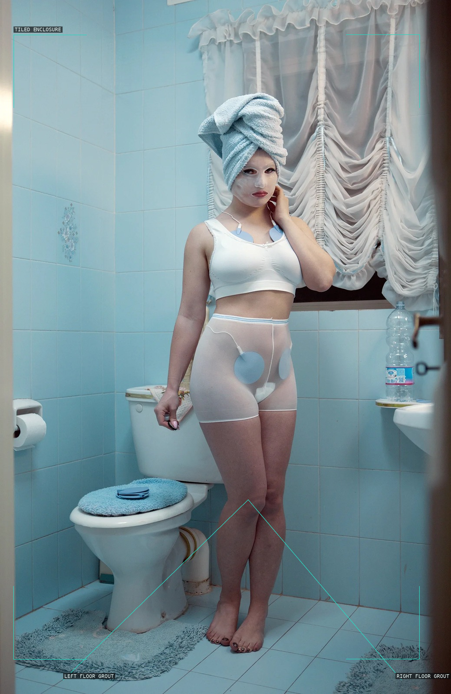
01-slendertone-ii
The tiled corner makes the beauty apparatus and standing body feel spatially trapped.
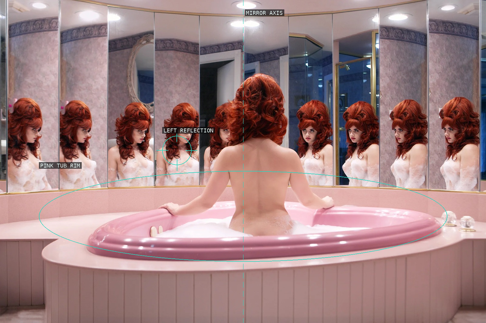
02-the-honeymoon-suite
The tub holds the body on the mirror axis while the reflections multiply a solitary scene.
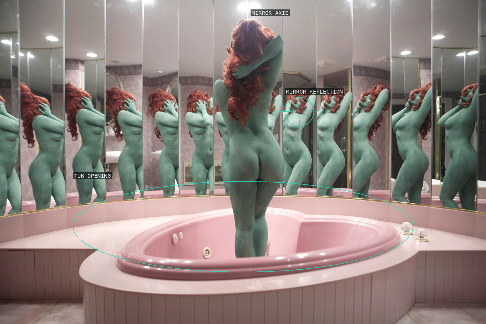
03-a-dream-in-green
The green figure is doubled around a central axis and caught inside the pink bath geometry.
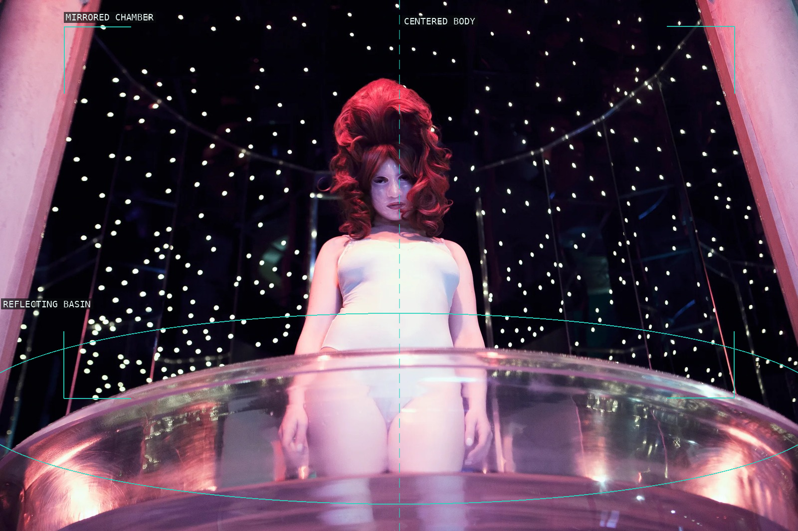
04-the-champagne-suite
The body rises from an oval basin against a field of reflected pin lights.
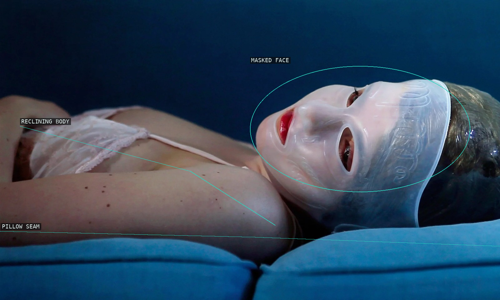
05-eternal-beauty
The mask turns the reclining body into a pale, close-cropped cosmetic tableau.
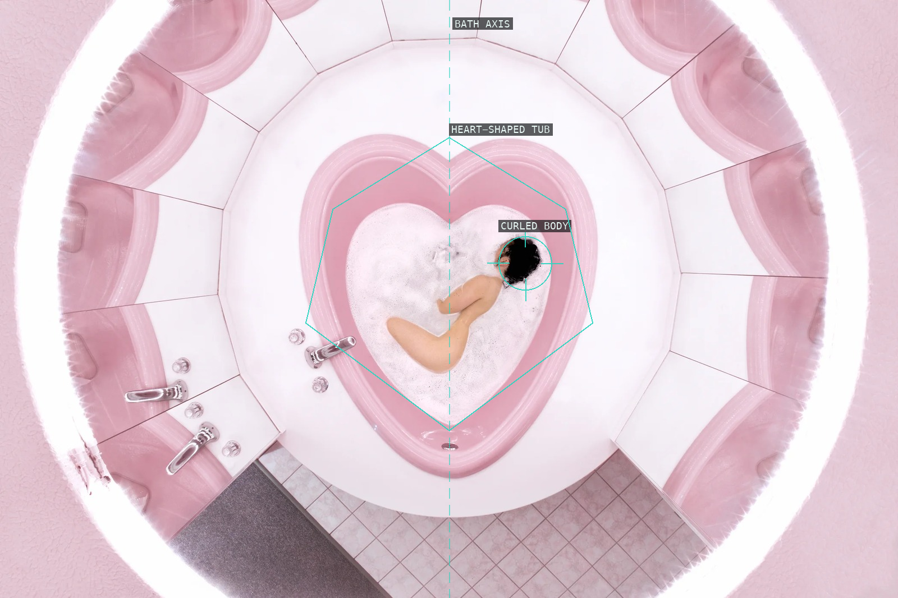
06-sensory-deprivation
The overhead view makes the heart-shaped bath a bright enclosure around a curled body.
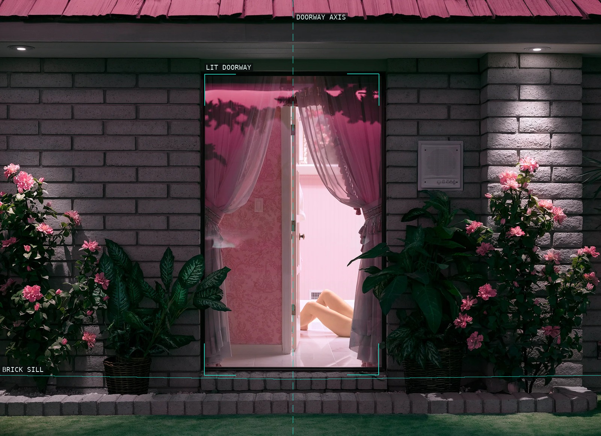
07-a-cure-for-death
A bright doorway cuts into the dark brick facade and reduces the body to a threshold event.
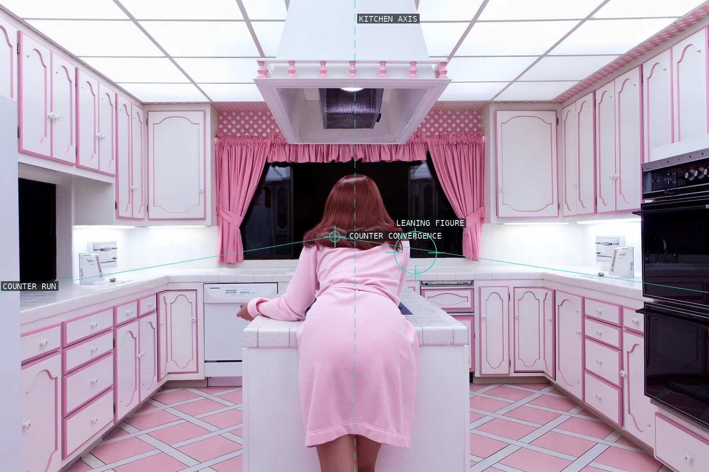
08-subterranean-kitchen
The counters converge around a figure whose pose interrupts the kitchen's rigid bilateral order.
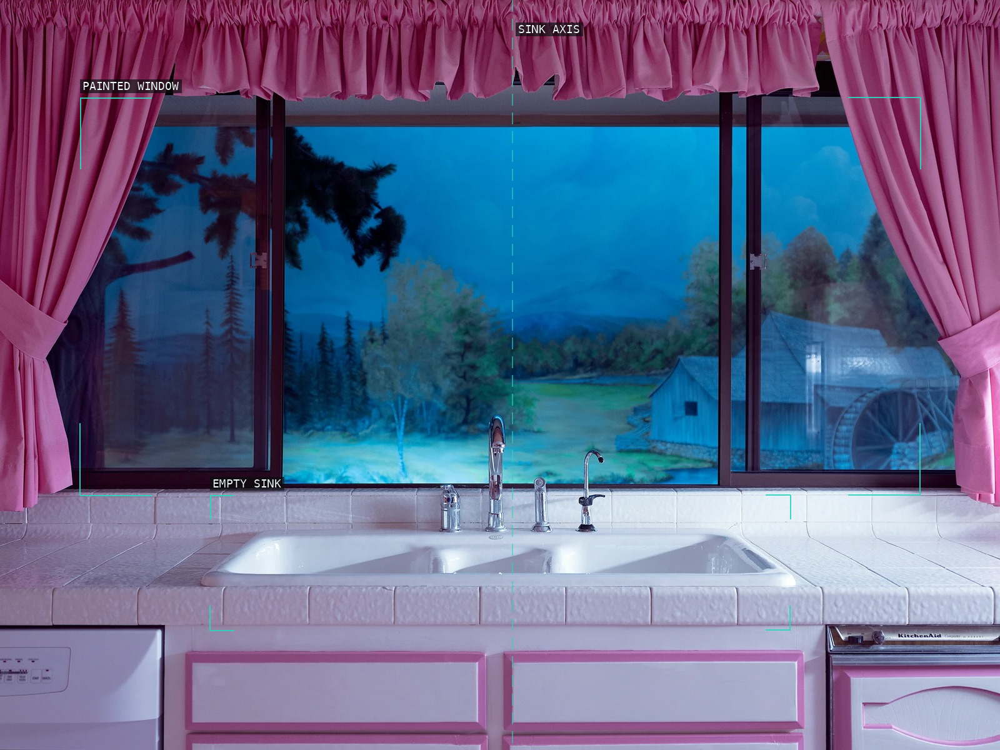
09-tuesday-in-eternity
Curtains and a painted pastoral window stage an empty domestic view around the sink.
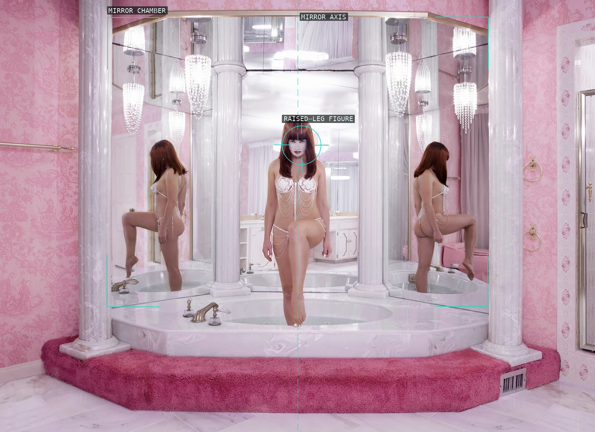
10-a-clone-of-your-own
The frontal body holds the mirror chamber's axis while reflections make one figure appear repeatable.
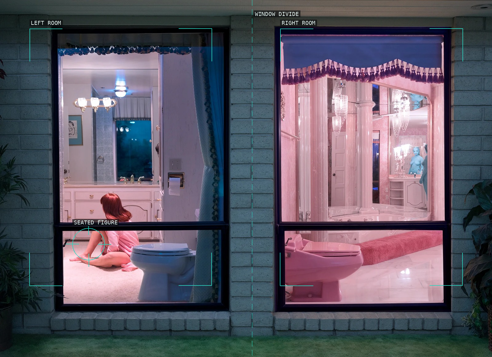
11-how-much-life-is-enough
Two glowing rooms are separated by a rigid mullion, making the seated figure an observed fragment.
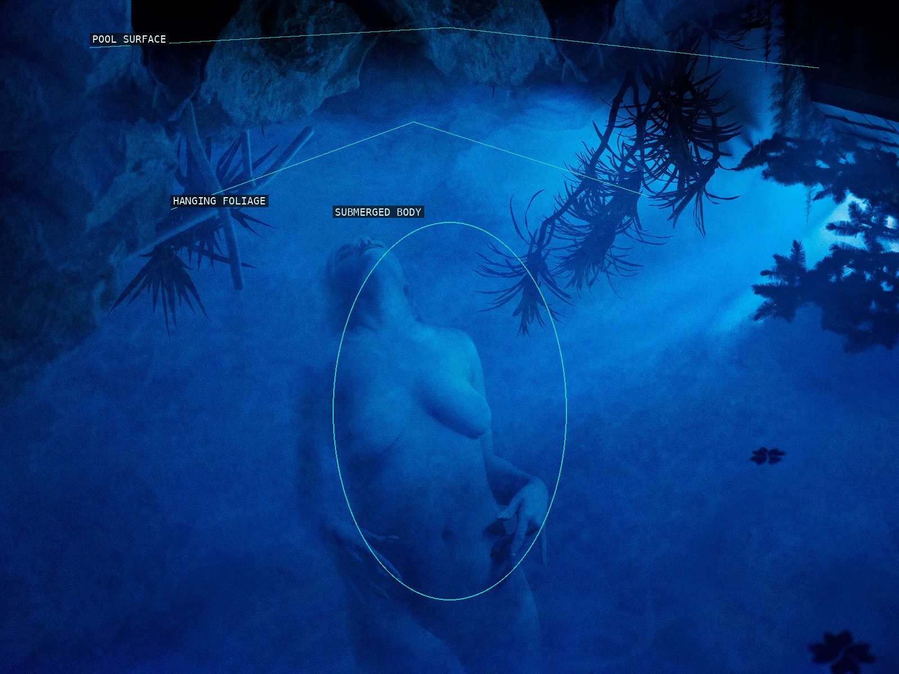
12-immortal-bodies
The blue pool makes the body dissolve beneath an artificial canopy of submerged foliage.